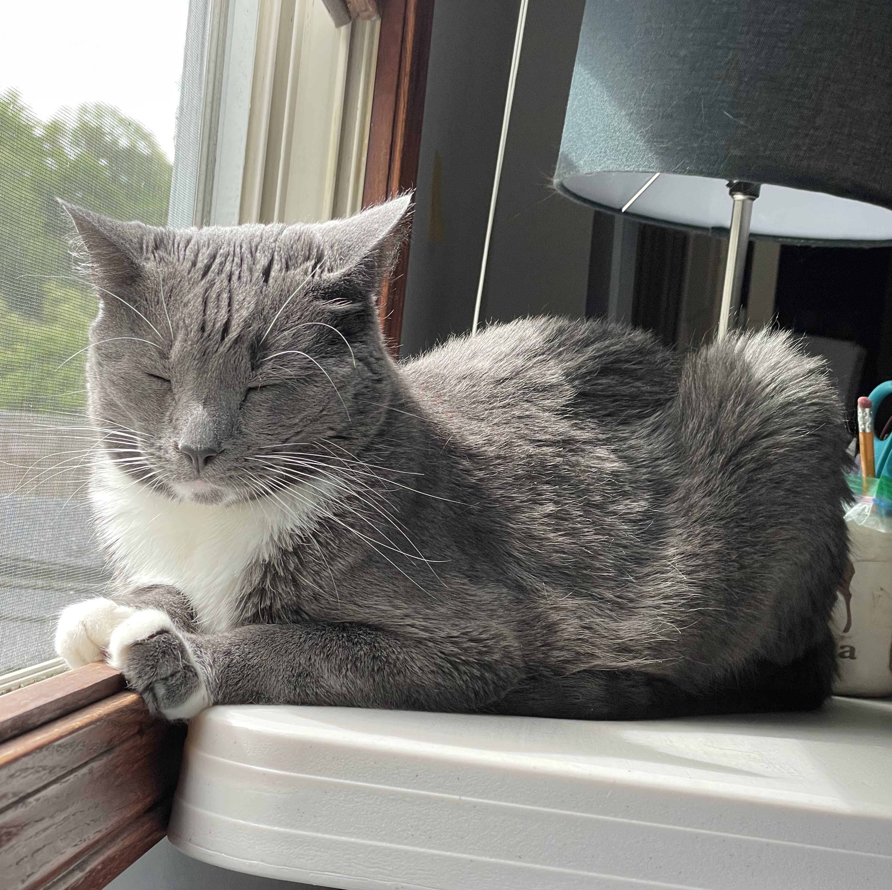
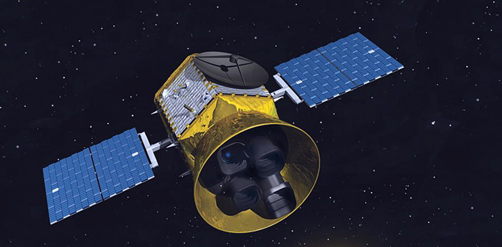
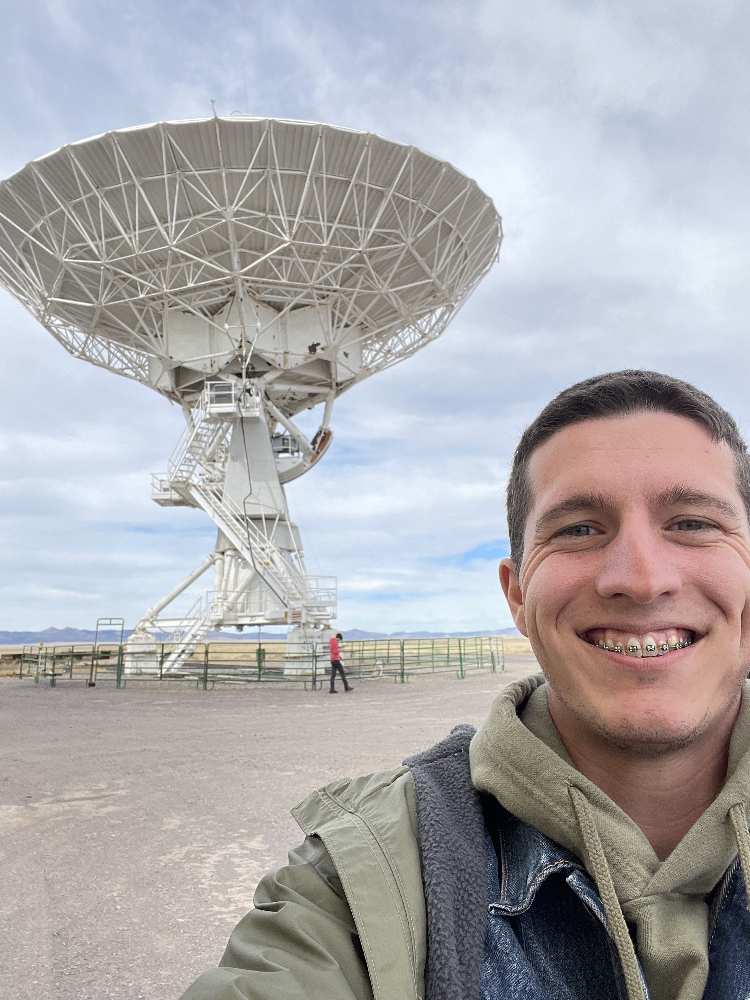

About Me
I was born near Cleveland, Ohio in 1997 to Elizabeth and John Oddo,
to whom I am forever grateful for cultivating and fostering my curiosity.
I also cite my grade-school involvement in
Science Olympiad as one of the primary
drivers of my lifelong love of science. I've known for a long time that I wanted to do science,
but I didn't always know which field to choose because it all seemed so cool!
I've always found astronomy especially interesting because it's really boggling to try and reconcile
astronomical scales with the scales of things on Earth (e.g. If you're the average American,
your one-way commute to work is 15 miles, and your average commute takes 27 minutes. If you were to
"commute" at that same rate to one of the nearest star-forming regions, the Orion Nebula,
and get an up-close glimpse of stars at work
you would be commuting for about 2.7 BILLION years. Let's hope the traffic doesn't slow things down further.)
I completed my Bachelor's degree at Case Western Reserve University in 2020 and I am currently a
PhD candidate at the University of New Mexico (check out the Research page to see what I do!).
Very briefly, my scientific passion is extrasolar planets (or exoplanets), which is the of study of planets orbiting other stars.

I am a cat dad to Chini (pictured above). I enjoy running (and other outdoor activities like hiking and biking),
baking, jazz music, DnD, and being a nerd in many other forms.
Thanks to: Lori Cohen, Amy Roediger, Tom Ramsey, Victor Senn, Mark Harker,
Ben Monreal, Don Figer, John Ruhl, Gary Chottiner, Chris Mihos, Stacy McGaugh, Diana Dragomir (*PhD advisor)
and many MANY more friends, colleagues, teachers and mentors for being a part of my journey so far. I couldn't do this without you all.
Research

Publications: Check out my publications here!
The focus of almost all of the research I do is transiting exoplanets.
There are multiple different ways to find exoplanets, but the transit method currently holds the record for the most planets discovered,
in part because this method of planet detection is the easiest to do at a large scale. For example, the NASA
Transiting Exoplanet Survey Satellite (TESS) Mission
is scanning nearly the entire sky for transiting planets. I work with TESS data often for a few different purposes, which are listed below.
**The search for circumbinary exoplanets**
Awarded NASA FINESST in 2023!
The ever-growing zoo of planets that we've discovered so far exhibits lots of worlds that were
previously beyond our imagination
(e.g. WASP-12b,
55 Cancri e, or
AU Mic b), even in science fiction.
But sometimes, science fiction can come before science fact. Tatooine, home world of Anakin Skywalker in Star Wars, is a fictional planet with two suns in the sky.
Given the relative sizes and positions of these suns from Tatooine's surface in the films, it has been suggested that Tatooine orbits outside of both stars in its solar system,
making it a circumbinary exoplanet (circum- meaning around or surrounding, and -binary meaning a two-star system! Here's a cool
video showing what a real circumbinary planetary system might look like).
For a while, many astronomers believed that planets simply could not form around such tight binary stars, and there's good reason for that.
But nature can be pretty tricky, and a handful of circumbinary planets have been discovered in real life.
Their existence and how exactly these planets get to be where we find them is still an open question.
Furthermore, because so few circumbinary planets have been discovered, we still don't know the answers to questions such as how often these planets form,
or around what types of binary stars they form. There are also lots more questions that the currently-known set of circumbinary planets have opened rather than answered
(like whether or not they like to pile up in certain locations).
This is the space where I come in. I'm developing methods to take advantage of the huge number of stars that TESS observes
and find a whole population of circumbinary planets, which could help us answer these questions about the limits of planet formation in the strangest of circumstances.
Or maybe we won't find too many new ones at all, and that would be telling in its own way. My goal for my PhD project is to publish an occurrence rate
(which is usually defined as something along the lines of number of planets per star) for circumbinary planets as found by TESS. If you're interested in talking more about circumbinary planets,
I'm always willing to! Please reach out to me in any of the ways listed on the Contact page.
Comparing precision between telescopes
My first 1st-author paper 😄. In this work, we analyzed a set of 10 planets, which were all initially found by TESS.
We then performed followup observations with the ESA CHEOPS mission. CHEOPS has a larger mirror than TESS does,
which means it collects more photons and should be more precise than TESS is. However, these telescopes observe at slightly different wavelengths, and they also have different noise properties,
which are things we should take into account. We compared the actual precision of our observations with the expected precision of these telescopes, finding that
TESS is performing slightly better than we might have expected. There are a lot of details in the paper, so I would love it if you read it here!
I've also done some previous work on expected exoplanet yield with a large direct imaging telescope concept (such as that recommended by the
ASTRO2020 Decadal Survey) and applied that to the
Wide Aperture Exoplanet Telescope (WAET) concept.
Contact

My primary mode of professional communication is email.
Email: doddo@unm.edu (primary) OR
domoddo15@gmail.com